The Forge
There are two forges: the Armory (weapons, earns Crowns) and the Armorsmith (armor, earns Shields). Each product costs a bit more for every unit you already own (growth), earns its base income per unit every cycle, and is automated by its apprentice, who is paid in the other forge's currency.
Armory
| Product | Rarity | Base cost (Crowns) | Growth | Cycle | Income per unit (Crowns) | Apprentice (Shields) |
|---|---|---|---|---|---|---|
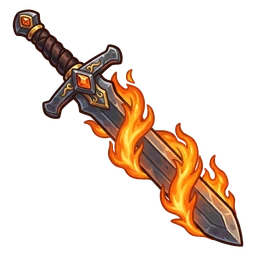 Flame Tongue Comes lit. There is no off switch. | Rare | 5 | ×1.07 | 1 s | 1 | 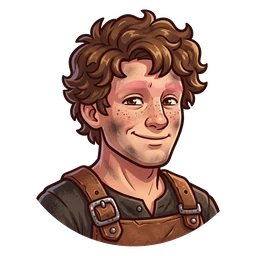 Pip, eyebrowless 1K |
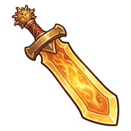 Sun Blade Great for dungeons. Terrible for naps. | Rare | 70 | ×1.105 | 3 s | 20 | Grunk, reformed goblin 14K |
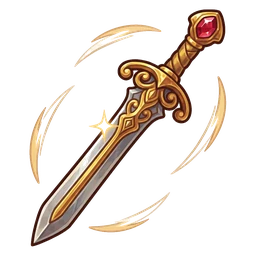 Dancing Sword Dances on its own. Asks you not to stare. | Very rare | 900 | ×1.13 | 8 s | 250 | Madame Valsa 180K |
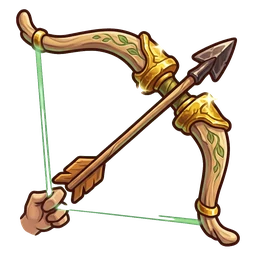 Oathbow Yes, a blacksmith making bows. Don't ask. | Very rare | 11K | ×1.12 | 20 s | 3K | 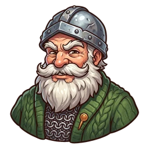 Sir Sparks 2.2M |
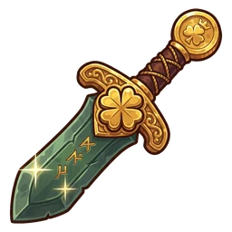 Luck Blade Brings luck. Just not to whoever forges it. | Legendary | 200K | ×1.11 | 50 s | 36K | 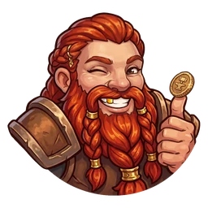 Bruni Rockbeard 40M |
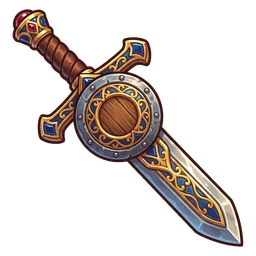 Defender Defends itself. From you too. | Legendary | 3.5M | ×1.1 | 150 s | 450K | 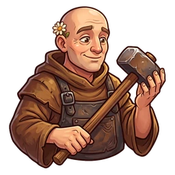 Brother Tobias 700M |
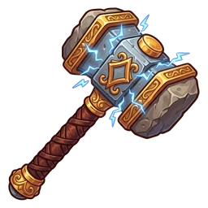 Hammer of Thunderbolts Handle with rubber gloves. | Legendary | 63M | ×1.09 | 450 s | 5.6M | 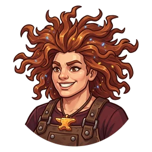 Thora Thunders 12.6B |
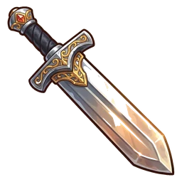 Vorpal Sword Cuts off heads. And budgets. | Legendary | 1.2B | ×1.08 | 1350 s | 70M | 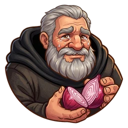 Don Swoosh, retired executioner 240B |
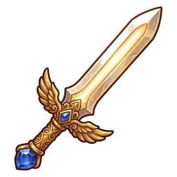 Holy Avenger Glows in the presence of evil. And of customers who don't pay. | Legendary | 21B | ×1.075 | 4000 s | 900M | Sister Radiant 4.2T |
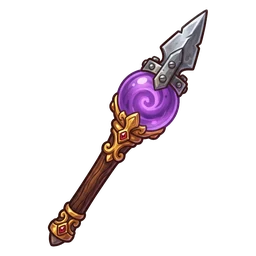 Staff of the Magi The wizard insisted. We added a steel tip, so now it's a weapon. | Legendary | 380B | ×1.07 | 12000 s | 12B | 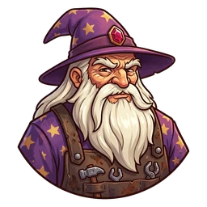 Archmage Ferrulio 76T |
Armorsmith
| Product | Rarity | Base cost (Shields) | Growth | Cycle | Income per unit (Shields) | Apprentice (Crowns) |
|---|---|---|---|---|---|---|
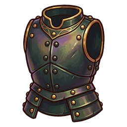 Adamantine Armor Unbreakable. The forge's hammers, not so much. | Uncommon | 6 | ×1.07 | 1.5 s | 1.5 | Knock, training golem 1.2K |
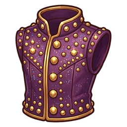 Enchanted Studded Leather Looks like party clothes. It's armor. | Rare | 80 | ×1.105 | 4 s | 26 | 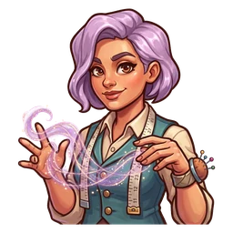 Lila, illusionist tailor 16K |
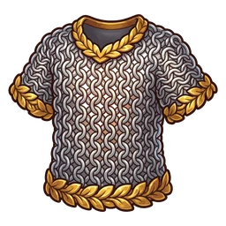 Elven Chain So light you forget to put it on. | Rare | 1K | ×1.13 | 10 s | 310 | Eluriel, ancient elf 200K |
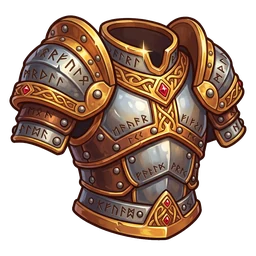 Dwarven Plate Weighs a ton. Dwarves call it lightweight. | Very rare | 13K | ×1.12 | 25 s | 3.7K | 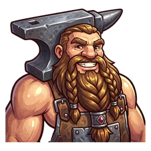 Durgan, grumpy dwarf 2.6M |
Animated Shield Follows you everywhere, like a metal puppy. | Very rare | 220K | ×1.11 | 60 s | 43K | 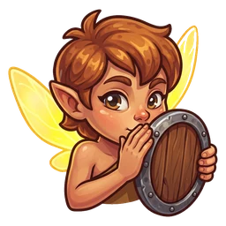 Spark, the sprite 44M |
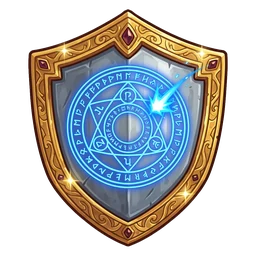 Spellguard Shield Bounces magic. And criticism. | Very rare | 3.9M | ×1.1 | 180 s | 540K | 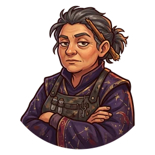 Morgana 780M |
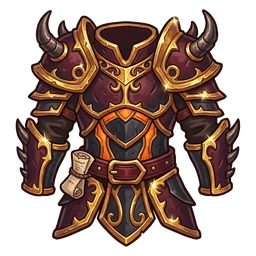 Demon Armor Grants demonic strength. Mind the fine print. | Very rare | 71M | ×1.09 | 540 s | 6.7M | 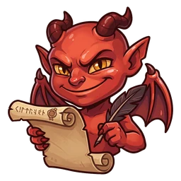 Ember, the imp 14.2B |
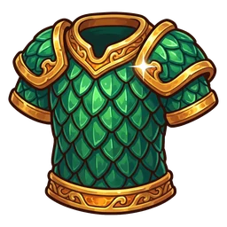 Dragon Scale Mail Ramón sheds once a year. We recycle. | Very rare | 1.3B | ×1.08 | 1600 s | 83M | Ramón, retired dragon 260B |
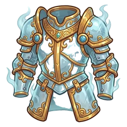 Plate Armor of Etherealness Walk through walls. The door is still easier. | Legendary | 24B | ×1.075 | 4800 s | 1.05B | 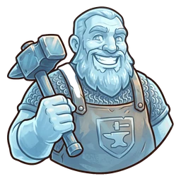 Sir Eusebio, ghost 4.8T |
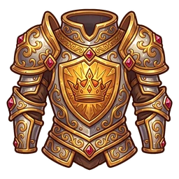 Armor of Invulnerability Nothing gets through. Not even complaints. | Legendary | 430B | ×1.07 | 14400 s | 14B | 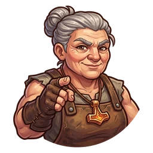 Master Iron, your mentor 86T |
Milestones
At 25, 50, 100, 200, 300, 400 units of a product, its cycle is divided by 2. With all 6 milestones a product runs 64 times faster.
Upgrades
| Upgrade | Effect | Cost |
|---|---|---|
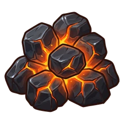 Volcano Coal 1,000-year warranty. | Flame Tongue ×2 | 250K Shields |
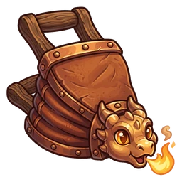 Baby Dragon Bellows Sneezes fire. Sometimes on you. | Flame Tongue ×3 | 150K Shields |
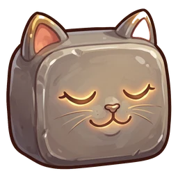 Purring Whetstone Nobody knows why it purrs. | Sun Blade ×3 | 900K Shields |
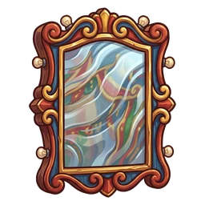 Funhouse Mirror Swords dance better when they look good. | Dancing Sword ×3 | 9M Shields |
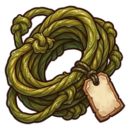 Troll-Gut Bowstring Better not ask where it came from. | Oathbow ×3 | 99M Shields |
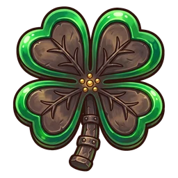 Four-Leaf Clover (Iron) We looked for a real one. Forging it was easier. | Luck Blade ×3 | 1.12B Shields |
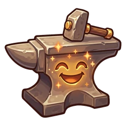 Enchanted Anvil Applauds when you hit it right. | All weapons ×2 | 4.2M Shields |
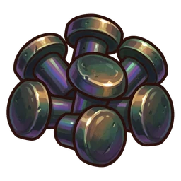 Adamantine Rivets You need another adamantine rivet to hammer them in. | Adamantine Armor ×3 | 150K Crowns |
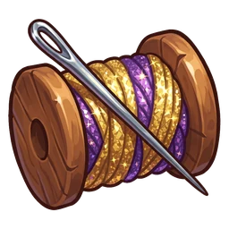 Glitter Thread So shiny the enemy gets distracted. | Enchanted Studded Leather ×3 | 960K Crowns |
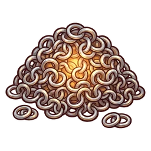 Mithral Rings Light, shiny, and you always lose one. | Elven Chain ×3 | 10M Crowns |
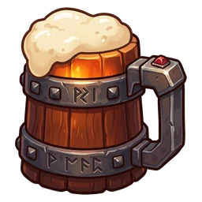 Dwarven Forge Ale Dwarves forge better with one. With three, they sing. | Dwarven Plate ×3 | 117M Crowns |
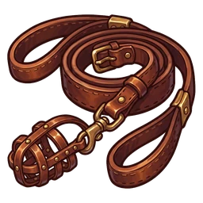 Muzzled Leash The Animated Shield is a good boy. It just hates the mailman. | Animated Shield ×3 | 1.28B Crowns |
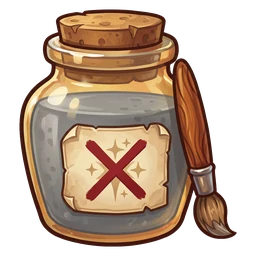 Antimagic Varnish Smells weird. The spells think so too. | All armor ×2 | 4.5M Crowns |
Merchant, Boost and offline production
- Merchant: trades Crowns for Shields (or back) at 3 : 1. With a video, 3 trades a day go 1 : 1.
- Boost: everything is worth ×2. Each video adds 10 min, up to 2 h banked.
- Offline: apprentices keep working up to 4 h with the game closed. Extend it with Runes (4 → 6 → 8 → 12 → 24 h) and the Dormouse Amulet. When you return you can double it with a video (up to 5 a day, if you were away 30 min or more).
Runes
Runes are the special currency. Earn them from the daily gift (7-day streak: 3, 3, 5, 5, 8, 8, 15), Board quests, achievements, expeditions and Chronicles, or buy them in the Shop.
| Use | Cost |
|---|---|
| Hourglass: collect 1 h of production | 20 |
| Hourglass: collect 24 h of production | 150 |
| Hourglass: collect 168 h of production | 900 |
| Offline cap: 4 h → 6 h | 50 |
| Offline cap: 6 h → 8 h | 100 |
| Offline cap: 8 h → 12 h | 200 |
| Offline cap: 12 h → 24 h | 400 |
| Golden Apron: all apprentices ×2 | 240 |
| Dwarf King's Hammer: weapons ×3 (survives the Guild) | 180 |
| Fairy Queen's Breastplate: armor ×3 (survives the Guild) | 180 |
| Speed up expeditions, healing and construction | 1 per 10 min left |